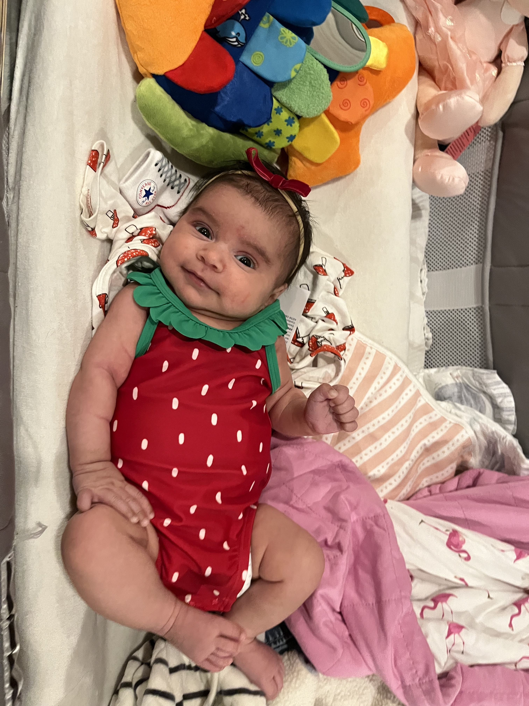

I set out at night, rolled through four hours of dark, pausing only for sustenance: a fish in cold slices, some salt, eaten on the move. When I arrived, thirsty and shuddering, I was welcomed only by beasts - brown dog, white cat, green cat - whose spines brushed against my shins as I descended into a cave without light. There I fell quiet. Everything I knew about this fruit meant this was worth the journey.
Before dawn I awoke to a flicker of light. Another flicker. An arm slunk back from the entrance to my cave. Some small sentry had registered my presence. Now he was goading me to follow him. I turned away, too weak to heed any call before the sun. My sleep was already broken, though, and soon enough he was back, with a tiny voice of urgency, summoning me from my cave. It was no hour to be moving, but I was seeking this fruit and he would be my guide.
Before my eyes opened I reviewed what I knew of this fruit:
So he wanted to know: would I follow?
The guide pattered up the steps from my cave. I came after, slowly at first. Soon I realized I was so close to this fruit that, even as I kneaded sand from my eyes, I wanted not to walk but to . . .
There she was. "Blobby," as my guide calls her--
--or, as we call her, Thara, my new niece 🍓